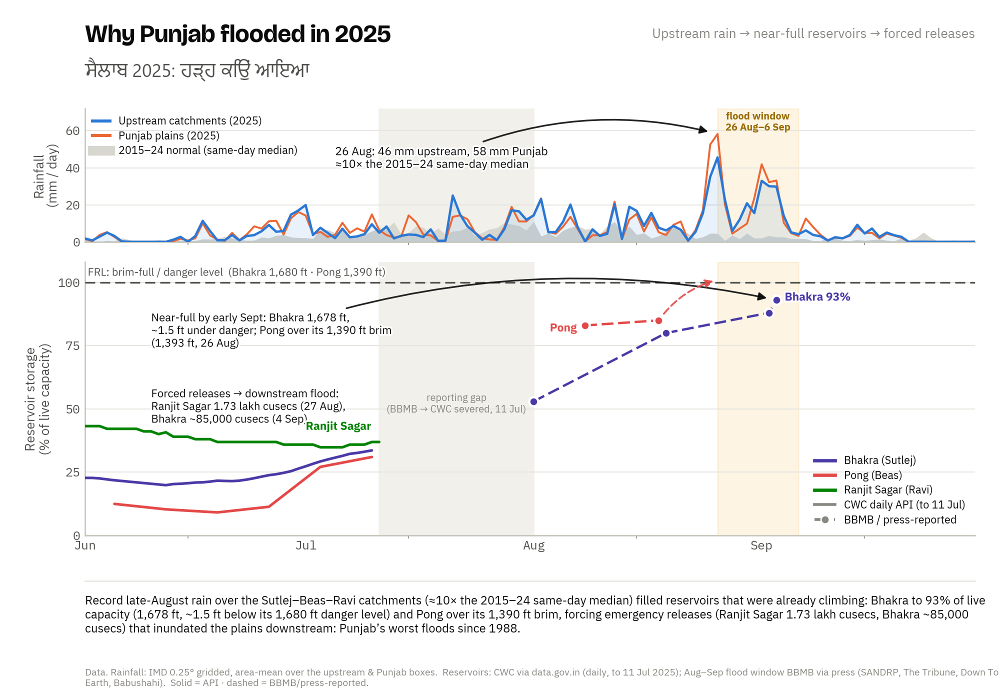
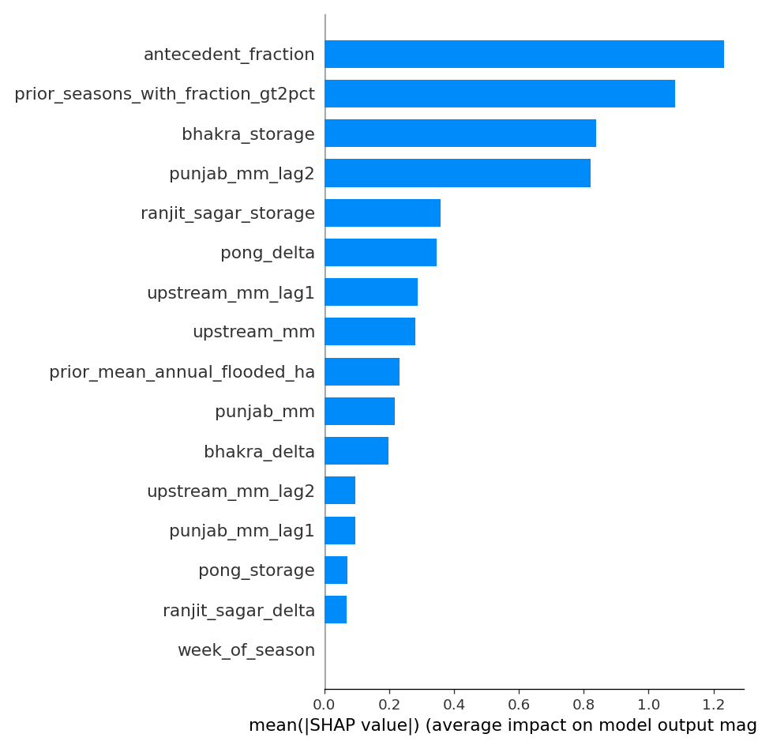
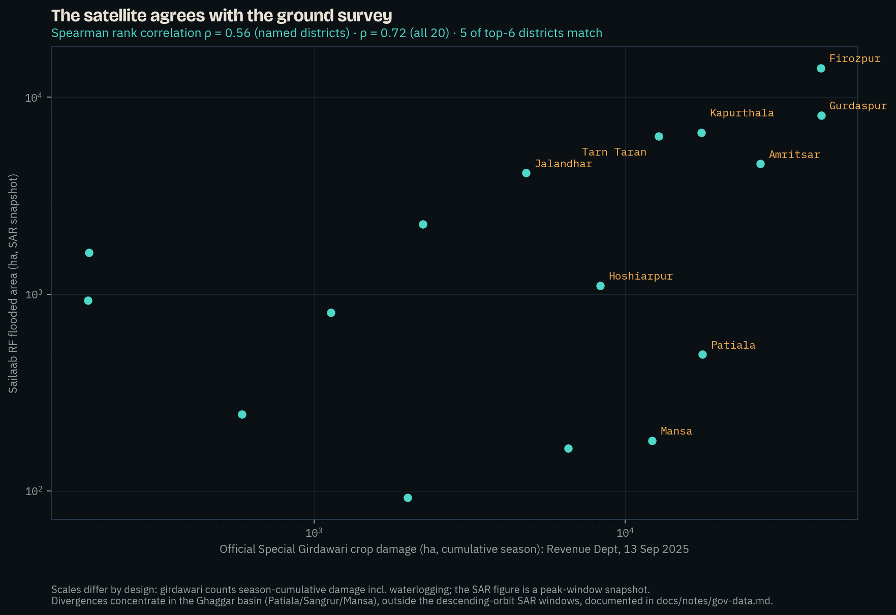
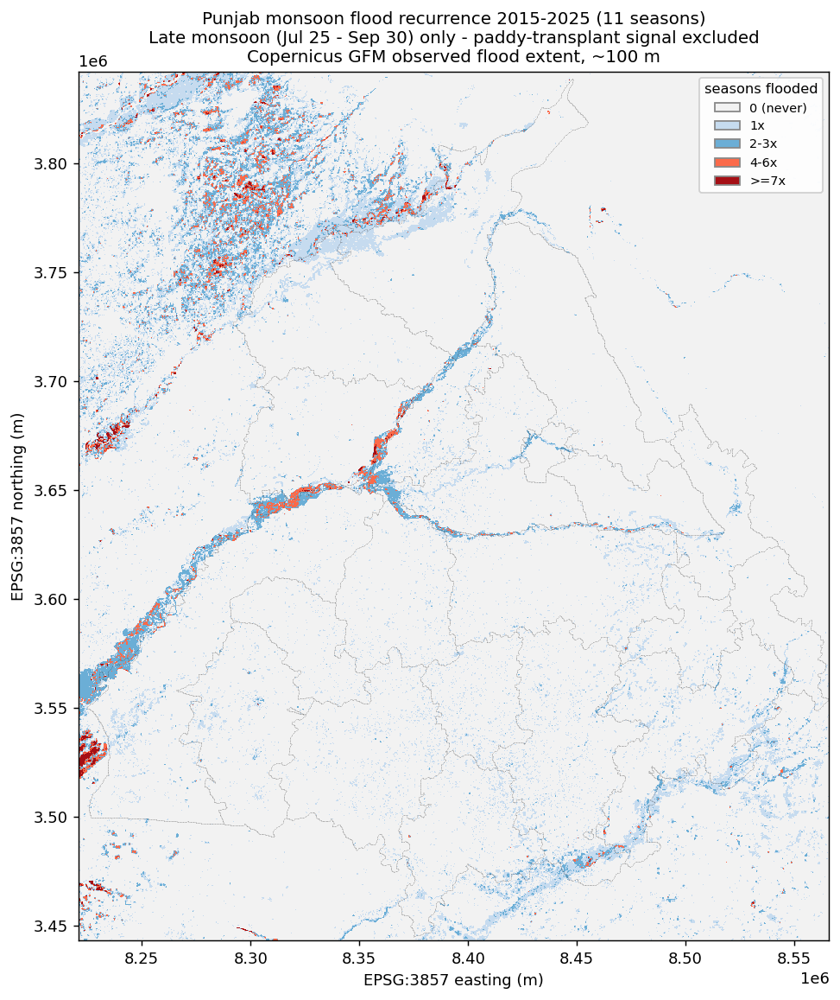
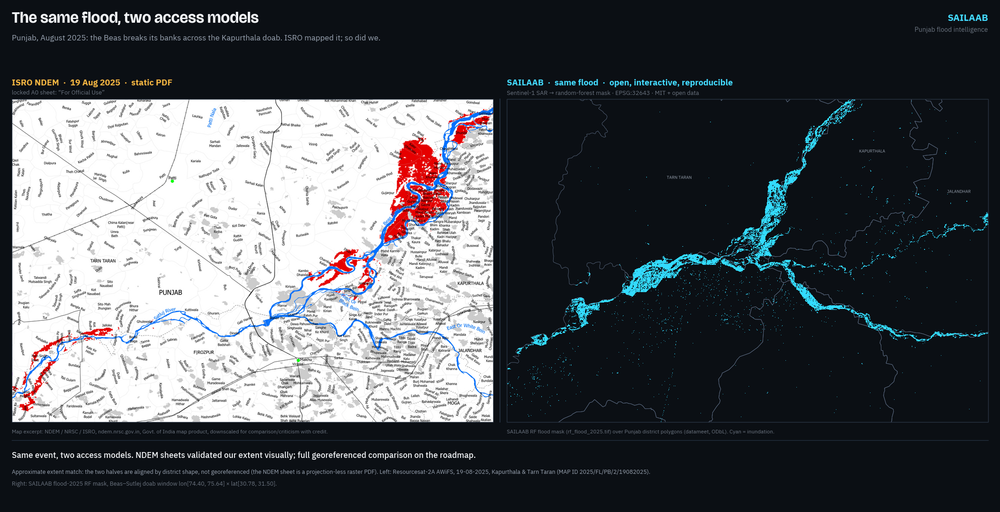

In August and September 2025, Punjab suffered its worst flood since 1988: all 23 districts affected, ~3.55 lakh people, 1.48–1.75 lakh hectares of crops destroyed. Four failures made it worse than it had to be. Nobody was forecasting: in the Central Water Commission's own state-wise table, Punjab has zero flood-forecasting stations, absent from a 226-station national network (Haryana 1, J&K 3; the one site CWC ever added on the Ravi is defunct). Punjab's rivers sit outside India's flood-forecast network. Maps existed but were locked: ISRO's NDEM produced excellent flood maps as static PDFs, one snapshot at a time, not analyzable, not open. Nobody knew the recurrence: Punjab has no public flood-frequency atlas (NRSC published them for Assam and Bihar), so villages that flooded four times in a decade were treated as first-time surprises. Relief ran on foot: girdawari compensation required weeks of manual crop surveys while satellite data that could target it sat unused.
A five-module open pipeline that turns free satellite radar into flood intelligence a district officer can act on. I built it in Punjab during the 2026 monsoon, and it is running live today (the monitor executes on public CI every 6 hours with zero accounts or keys; jurors can watch it commit).
| Module | What it produces |
|---|---|
| 2025 Flood Atlas | Sentinel-1 SAR flood extent (physics baseline + Random Forest), per-district and per-tehsil statistics |
| Decade Hazard Atlas | Every monsoon 2015–2025 mapped identically → Punjab's first public flood-frequency map + named "repeat victims" tehsil list |
| Impact Engine | Crop damage (₹351–523 crore band), population exposure, submergence-duration atlas, the rain×dams×releases causal chart |
| Forecaster | XGBoost district flood-risk model trained on the pipeline's own decade of SAR-derived labels, SHAP-explained and conformal-bounded |
| Live Monitor | Every new Sentinel-1 pass → district flood km² → ਪੰਜਾਬੀ / हिन्दी / English alerts, automatically |
91 tehsils are individually scored, giving relief a named list: Khadur Sahib (Tarn Taran) flooded in 6 of the last 11 monsoons, Sultanpur Lodhi (Kapurthala) in 5, Moonak (Sangrur) and Patti (Tarn Taran) in 4. These are the exact administrative units where girdawari verification and pre-positioning should start. Population exposure adds the human denominator: 0.76–1.78 lakh people lived inside the mapped water (GHSL 2025), consistent with the official 3.55 lakh "affected" once you see that flooded land is overwhelmingly low-density cropland (146–206 people/km² vs Punjab's ~550 mean). Everything is login-free and reproducible: anonymous Planetary Computer STAC for Sentinel-1, keyless Copernicus-GFM WMS, IMD rainfall, CWC reservoir records. A district collector, a journalist, or a student can re-run every number with zero accounts.
Random Forest flood classifier. Features: VV/VH backscatter, pre/post change, terrain. Labels: bootstrapped from agreement between our physics-threshold map and Copernicus GFM. No hand digitization, and we say so. Validation is spatial cross-validation across river basins (train Ravi–Beas districts → test Sutlej districts, and swap). We report the trap honestly: agreement-strata points are near-separable (fold F1 ≈ 1.0), so we publish the independent fresh-point comparison (OA 0.983 vs GFM) and the three-method envelope (Tier-A 34k < RF 52k < GFM 86k ha in-district). A small U-Net trained on the Sen1Floods11 hand-labeled benchmark (test IoU 0.63) completes a three-method benchmark table in which the target-domain RF wins and the imported deep model's resolution gap is quantified rather than hidden.
The self-labeling loop. Nobody hands you 11 years of Punjab flood labels, so the mapping engine manufactured its own: 1,177 day-slots probed, 467 flood-active days rasterized, 2,420 district-window training rows. Doing that exposed a trap that would silently poison any naive attempt: June and July "floods" in Punjab are largely rice transplanting, because deliberately flooded paddies inflate apparent flood area ~20×. All forecaster training excludes the transplant windows; calibrated late-season products ship alongside raw ones.
XGBoost district forecaster. Unit: district × 10-day window. Predictors: IMD rainfall (local + Himalayan upstream, lagged), reservoir storage and its rate of change, antecedent flooding, decade-frequency prior. Gradient boosting rather than deep learning: the sample-efficient, interpretable right tool for 2.5k tabular rows with 27 events. Leave-one-year-out ROC-AUC 0.946 (PR-AUC 15× base rate), leakage-checked with fold-safe priors; split-conformal intervals published, including their honest failure on the +10σ 2025 event (non-exchangeability, quantified). A pre-registered ERA5 sub-daily-intensity challenger lost to this model and the negative result is documented.
The ablation we ran on ourselves (pre-declared; both expectations failed; shipped verbatim). Does the dam signal carry skill? SHAP ranks Bhakra storage #3 in attribution. But delete all six reservoir features and the 2025 hindcast is unchanged (5/5, Kapurthala #1, same ~10-day lead) while pooled precision even improves. The dam signature is attribution rather than load-bearing skill, and the dam story lives in the headroom analysis, where the evidence supports it. Operationally that is a feature: the BBMB dams stopped reporting centrally in July 2025, so the live 2026 nowcast must run reservoir-blind, and the ablation proves that configuration loses nothing. Does it beat naive persistence? On pooled average precision, no (0.31 vs 0.27, published). The model wins where forecasting lives: ROC-AUC 0.946 vs 0.936 and the pre-crest window, 4/5 vs 3/5 early flags. Meteorology-only collapses (3/5, PR-AUC 0.11). Antecedent flooding is the load-bearing signal, which is why the 6-hourly monitor and the forecaster are one system.
Vs Google Flood Hub: river-stage forecasts on ungauged-basin technology; under-models dam-regulated rivers, no district crop risk. Sailaab is impact-native and regulation-aware in its analytics; by ablation its detection does not depend on the now-dark reservoir feed. Complementary, not competing.


Every satellite step is gated by a pre-declared checkpoint: the expected numeric band is written into the verification log before the run, then the actual, then PASS/FAIL. The log ships in the repo with its failures intact (e.g., the NRSC Sangrur-2023 anchor fails on its exact date because no satellite pass existed that day; the same event registers at 33,771 ha in adjacent windows). Validation is triangulated:



The live monitor is not a plan. It executes on GitHub's public runners every 6 hours with zero secrets: it detects each new Sentinel-1 pass over Punjab, computes district flood areas, renders trilingual alerts, and commits the state publicly. The public app is interactive: an every-district map with five switchable layers (live observed, live model risk, 2025 flood, decade frequency, hindcast risk), click-through district panels (flooded ha, crop loss, ₹ at risk, recurrence, hindcast P, official girdawari figure), a before/after satellite swipe, a "replay 2025" scrubber that shows model risk rising before the water arrives, and a full ਪੰਜਾਬੀ/हिन्दी interface toggle. From 25 July 2026, inside judging week, the forecaster also publishes live current-window district probabilities on every CI cycle (it activates only in its trained post-transplant domain; the countdown is shown honestly until then).
(1) First open ML-ready flood mapping of Indian-Punjab 2025 (the published RF precedent covered the Pakistani side); (2) Punjab's first public flood-frequency atlas and first submergence-duration atlas; (3) a self-labeling SAR→ML loop that manufactures its own decade of training data, with the rice-transplant contamination discovery published; (4) a district forecaster with a demonstrated ~10-day pre-crest lead, girdawari-corroborated and ablation-stress-tested, both failed expectations published; (5) an end-to-end account-free architecture, so every number re-runs without an account; (6) the quantified forecast gap: Punjab is absent from CWC's own station network, and Sailaab is the district-level layer that gap leaves open. The negative results (a challenger model that lost; conformal intervals failing on the record event; a U-Net losing to the target-domain RF; the ablation's two failed expectations) are published with the same prominence as the wins.
Multi-state scale-out (the pipeline is a bounding box + district file), village-circle girdawari integration, Bhashini voice alerts, GPU-scale models via the IndiaAI Compute programme, EOS-04 Indian-SAR cross-validation via NRSC Bhoonidhi, and official partnerships. Code MIT; maps and tables CC-BY-4.0; 408 automated tests; the method paper, data-source registry (every dataset: URL, license, access date) and the full verification log live in the repository.